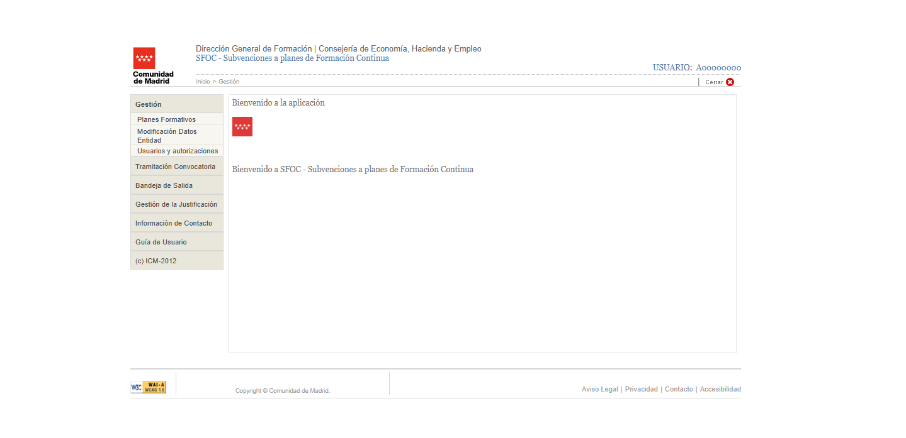
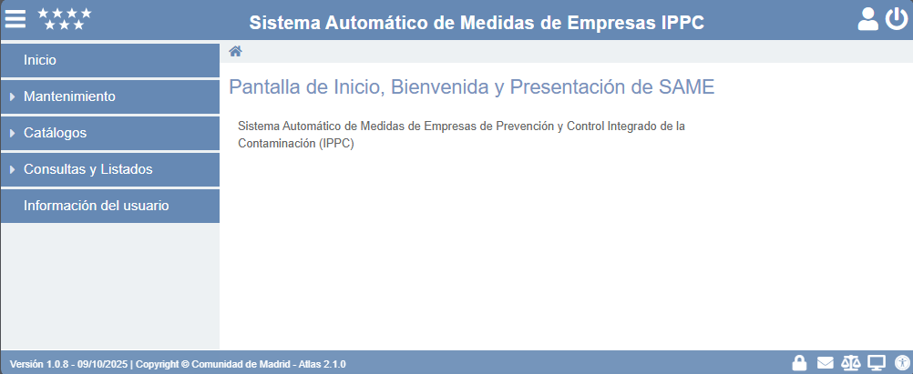
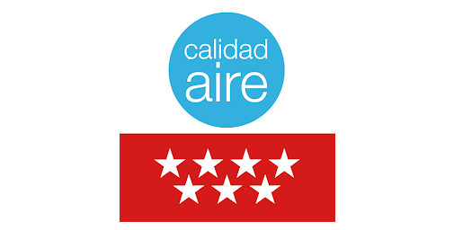
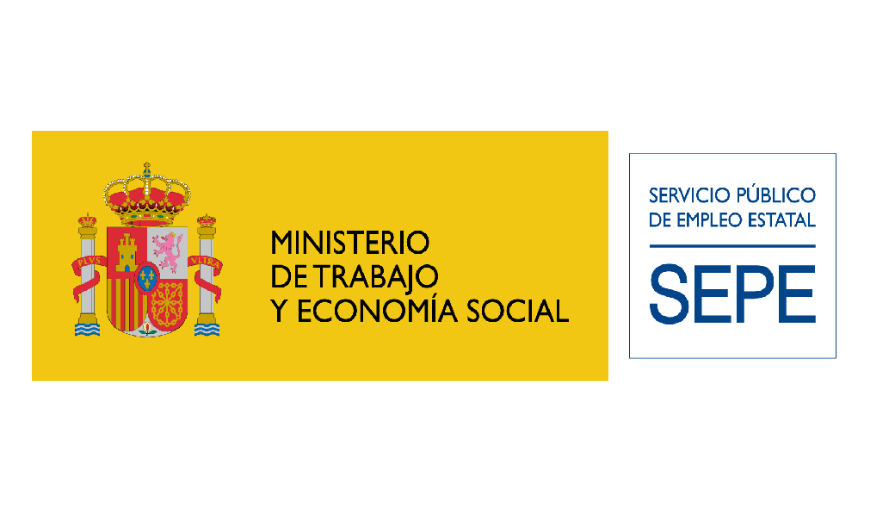
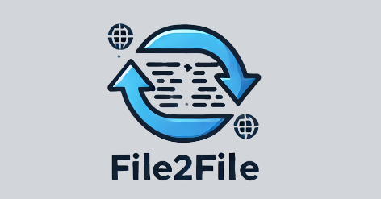

Hello, I'm Joselu
Software developer and investor. I build scalable products and explore digital assets with real utility.
About
Projects

SAME — Environmental Compliance System
Show description


SEEM — Employment Statistics System
Show description
Coinscope — Crypto Dashboard
Show description

Professional Experience
Full Stack Developer and Analyst — EPAM / NEORIS
Lead developer on SFOC and other critical applications. Full‑stack development with Java Spring Boot, Angular and internal frameworks, API design, Oracle/MySQL integration, batch processes and deployments.
CEO & CTO - LeiHub
CEO & CTO at LeiHub, leading the development of innovative solutions using DLTs technologies.
Skills
Languages, tools and methodologies I frequently use.
Languages
Java, JavaScript, TypeScript, PHP, Python, C/C++, SQL, HTML5, CSS, SCSS, JSP, xHTML
Frameworks & Libraries
Spring Boot, Angular, Laravel, Thymeleaf
Databases
Oracle, MySQL, PostgreSQL, MongoDB
Tools & DevOps
PL/SQL, XAMPP, pgAdmin4, Git, Subversion, Jenkins, Docker, SonarQube, Postman, IntelliJ, VS Code, Cursor
Vision on utility-focused digital assets
I focus on utility-first digital assets that drive measurable improvements in efficiency, governance and new business models. I prioritise projects with clear adoption metrics, fair tokenomics, and teams with proven track records.
Read full vision
Contact
Have an idea or want to collaborate? Let's talk.